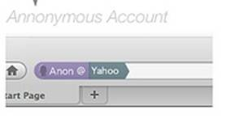
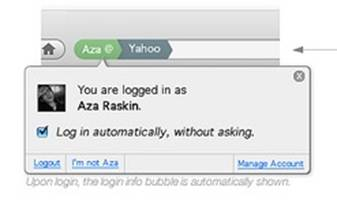

The WebID Protocol & Browsers
1. Position Statement
The browser is both the interface to the
Web as well as presenting the user's face to the world. The browser user should
therefore be conscious of the face he is presenting at any time. He should be able to
change it easily: identity selection should be a one-click gesture,
cryptographically-secure, and web site independent. It should put the user in control
of the information he shares with each site. And it should be available
now.
The WebID protocol enables all of the
above. It works in all browsers that correctly implement HTTPS and client-side
certificates. But with a twist: it ties those certificates into the web in a
RESTful manner allowing identities to be linked together in
a secure social web of trust, that does not require central authorities, and that
allows the user to control how he describes himself to each site he logs
into.
After describing the WebID protocol and its benefits, we will suggest a roadmap for future improvements in the browser that can take advantage of it.
2. WebID Overview
To illustrate how WebID works, we will first look in detail at what happens on the wire when Bob connects for the first time to a protected resource on Alice's Web Server. This resource could simply be a login button, or it could be any of the resources published there. This should help show just how simple and efficient the protocol is: it requires only one more HTTP connection than the original resource
requested, and the results of this connection can be cached.
- Bob requests
Alice's protected HTTPS resource
- Alice's web
server requests the client certificate on the TLS connection started above
- Bob's browser
presents him with a selection of identities to choose from: Having selected one, the corresponding X509
certificate is sent to Alice's server:
Public Key Info:
Public Key Algorithm: rsaEncryption
Public-Key: (1024 bit)
Modulus:
00:e8:f9: [snip] :c6:af:2e
Exponent: 65537 (0x10001)
X509v3 extensions:
X509v3 Subject Alternative Name:
URI: https://bob.net/id/bob#me
It contains Bob's WebID, shown in bold red above.
- Alice's server:
- checks that
Bob's browser is in possession of the private key corresponding to the public key
sent in the certificate, as specified by TLS
- extracts the
URI from the Subject Alternative Name field of the certificate, which is known as
Bob's WebID: a global identifier that refers to Bob via a document that describes
him, in a machine readable way using W3C standards.
- Alice's server
fetches Bob's WebID Profile at https://bob.net/id/bob in the example if an up to date
version is not in the cache
- Alice's server
checks that the profile relates Bob's WebID to the public key found in the
certificate. If they match then she knows that she is in
communication with the agent referred to by https://bob.net/id/bob#me
- Bob's identity
is then checked as to its position in a graph of relations in order to determine
trust according to some criteria decided by Alice combined with information from the
cloud.
This is outside the core of WebID, but it is important to
understand how it can work. Alice might decide for example that only a group of
friends who have given her a WebID personally may have access. Or she may be more
lenient, and allow any of the friends of those friends to also access that
resource, as specified by them in their profile located on their servers. Or she may
only trust employees of her company, or of her department, to view that resource.
Alice's server can do a lookup in a local file, crawl the web at intervals, or use
web services to gather the data to help make that decision.
- Access is
granted fully, partially, or denied and a representation is returned. Assuming the
resource requested is a friend graph, a full representation could be returned to a
friend, and a very limited one to an anonymous user.
The WebID placed in the X509 Certificate can be a https URL as
shown above. Although the HTTPS scheme is currently the most widely implemented,
WebID could also used with any dereferenceable scheme such as ftps://, ldaps://,
xris://, accnt: (used by webfinger ). It could also be used in future schemes such as
httpk that would give up human readable URIs in order to
avoid the centralisation problems of DNS.
3. Advantages of WebID
Issues of identity and privacy have been
growing increasingly serious as the Web has become social over the last decade.
Remembering login details has grown into a serious security issue as more sites asked
for them than people had the ability to remember. And the inability to easily share
restricted information across websites has become a visible problem to 100s of
millions of people as they started finding themselves and those they wished to
communicate with split across siloed services.
Specifically, WebID offers the following
advantages.
3.1 Overcoming Password Fatigue
Passwords are difficult to remember or
they are easy to crack. As a result people tend to re-use them, making phishing
attacks the biggest threat on the web, leading to a mistrust of new services. WebID
uses TLS-client certificates and public key cryptography as shipped in current
browsers in a way that enables the same certificate to be used across sites securely.
Furthermore with the HTML5 supported keygen element, creating such a certificate is
as easy as submitting an HTML form.
3.2 OpenID
OpenID
reduces the account multiplication issue by allowing users to login
to every site using the same global identifier. This provides a base from which WebId can be deployed,
procuring the following extra advantages:
- Protocol
simplicity: the WebID protocol is a lot simpler,
requiring only one more connection over and above the connection to the requested
resource, where the result is cacheable. OpenID requires seven TLS connections, significantly more than WebID. These
additional steps create opportunities for denial of service attacks, making it more
difficult to secure and to debug.
- User-interaction
simplicity: OpenID requires the user to remember and type
an OpenID URL. WebID hides this in the X509 certificate allowing the browser to offer
select-and-click interaction. This is very helpful anywhere, but especially on
handheld devices.
These protocol simplifications create a cascade of additional benefits. WebID can be applied recursively, enabling the Relying Party (Alice above) to identify herself using WebID, making it easy to build an authorisation protocol. WebId takes full advantage of the peer to peer nature of the Web.
3.3 Public Key Infrastructure
TLS-client certificates have been available in
the browser since 1996, but their usage has been limited to a small number of sites.
The organisation which generates the certificate is usually the same as the one that
consumes it, giving the user little advantage over username/passwords layered on
server-side https. Outside of very large and well-funded Defence related
organisations, client-side certificates have thus had very poor adoption.
The missing link to wide adoption is the global naming system
that OpenID takes advantage of with URLs, and that allows one to potentially
authenticate to all sites. What failed TLS was that X500 names were not Universal
Identifiers, were not designed to form an interlinked web, and hence were not usable
to authenticate to sites without those first having a federated agreement. One can easily
imagine how much resistance there would have been to global hypertext system if organisations had
to first make an agreement with every web site they wanted to visit, before their users
were able to visit them.
Having solved the naming/identity problem using standard URLs, WebId authorization agents can then use the web of interlinked profiles and other resources (eg. academic publications, ...) to calculate trust in a dynamic manner. Since trust can then be spread to a much large network of actors, each bringing a small piece of information to the graph, this allows both greater resilience in the system and more flexibility.
3.4 Future Proof Protocol
Not only does WebID work with the Web as it is
today, but it will be strengthened with the rollout of critical infrastructure
elements such as DNSSEC, which can be used as Dan Kaminsky
explains in his DNSSEC Diaries
to publish public keys of services, a work being developed formally
by the
IETF Dane
working group. This can be used to increase trust in all server
certificates, but in particular self-signed server certificates, which according to a
report by the
EFF Observatory
are three times more numerous than CA-signed certificates. By
lowering the entry barrier to using cryptography, both WebID and Dane will help bring
about an increasingly-secure Web.
4. Recommended Browser Improvements
All current browser-based authentication
methods fail to give full control over identity to the user. We declare that browsers
MUST give the user full visible control of their identity. With TLS, as with cookies,
one should be able to see clearly which identity one is logged in under and be able
to easily become anonymous again, as far as that is possible of course. The Firefox
Weave team have shown what this could look like, making use of the URL bar's existing
role as guarantor of server identity and extending it to client identity.

Here the user can see what persona they are
presenting to the site or if they are anonymous. It also permits the user to change
identity or to log out. The browser could then make use of the information found in
the WebID profile--linked to from the X509 certificate--such as finding a link to a
picture which could then be displayed, or linking to the account management page as
shown above.
This WebID anchor can then be used by browsers
to improve the user experience by:
- using bookmarking
services linked to from the profile
- using the linked social
graph to provide real time changes to address books as well as social web based spam
protection
- building micropayment
services by using the TLS cryptography layer, ...
5. Conclusion
WebID allows users to authenticate easily and
securely to any website in the world in a one click gesture without needing to fill
out any new forms. That site can immediately personalise the experience given the
information and social graph made available to it by the user (see Sketch of a RESTful photo Printing service ). This will allow innumerable applications
to be built that improve relations between individuals and their friends, co-workers,
employers, and vendors across domain and organisational boundaries.
The
W3C WebID Incubator Group
is keen to work with browser vendors and Web service providers to
help standardise the necessary formats, semantics, and RESTful protocols and to provide test suites for these. We are also keen to work with the Federated Social Web XG to build interoperable services in order to discover what gets adopted, standardise those pieces that are most widely agreed on, and discover issues that require longer term research to be resolved.
6. Additional Resources